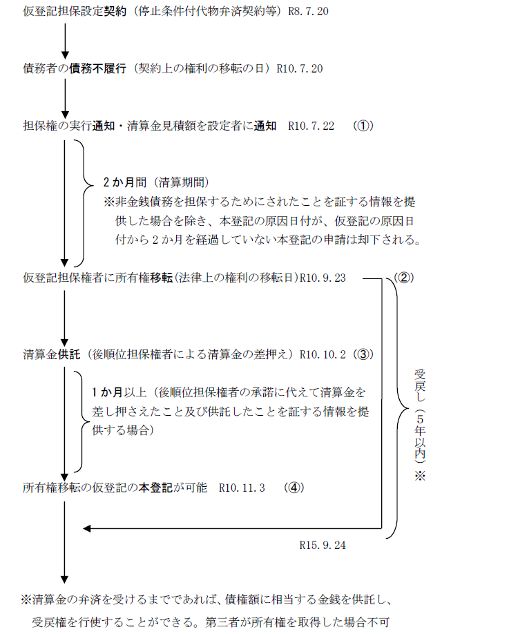
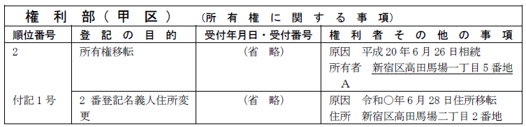
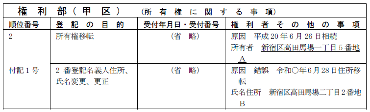

第１編 各 論
第６章 仮登記
第５節 仮登記担保
1. 意義
金銭債務を担保するため、その不履行があるときは債権者に債務者又は第三者に属する所有権その他の権利の移転等をすることを目的としてされた代物弁済の予約、停止条件付代物弁済契約その他の契約で、その契約による権利について仮登記のできるものを仮登記担保という（仮登記担保法1条）。
この仮登記担保には、以下のようなメリットがある。
①仮登記に基づく本登記の手続により、競売手続によらずに債権を回収することができる
②仮登記の効力によって、当該仮登記に後れる第三者の権利に関する登記を否定できるので、第三取得者からの抵当権消滅請求を否定することができる
【申請例128(参考) 担保仮登記に基づく本登記】
事例： ＡＢ間において、Ｂを債権者、Ａを債務者とする金銭消費貸借契約が締結され、当該金銭債務の不履行を停止条件とする代物弁済契約を締結し、当該契約に基づき、条件付所有権移転仮登記がＡ所有の甲土地甲区2番で登記されている。当該金銭債務の不履行により、Ｂは仮登記担保権を実行し、令和◯年9月23日、仮登記担保権者Ｂに甲土地の所有権が移転した。
2. 担保仮登記の手続きの流れ（仮登記担保法18条による場合）

(1) 債務者・設定者への通知（①）
債権者は、債務者の債務不履行があった後、債務者及び設定者に、清算金の見積額（清算金がないと認めるときは、その旨）を通知する。
(a) 債務者の受戻権
債務者等は、清算金の支払の債務の弁済を受けるまでは、債権等の額（債権が消滅しなかったものとすれば、債務者が支払うべき債権等の額）に相当する金銭を債権者に提供して、土地等の所有権の受戻しを請求することができる（仮登記担保法11条本文）。この受戻権は、形成権であると解されているので、受戻権の行使により、所有権は債務者等に復帰する。
もっとも、債務者等がいつでも受戻権を行使できるとなると、債権者に酷なので、清算期間が経過した時から5年が経過したとき、又は第三者が所有権を取得したときは、債務者等は、受戻権を行使できなくなる（仮登記担保法11条ただし書）。
(b) 後順位担保権者への通知（仮登記担保法5条）
債務者への通知後、債権者は、担保仮登記後に登記された抵当権等の担保権者に対し、上記(a)の通知をした旨等を通知しなければならない。
(2) 所有権移転の効力発生（②）
仮登記担保契約が土地又は建物の所有権の移転を目的とするものである場合には、予約完結の意思表示をした日、停止条件の成就日等以降に、債権者による上記①の通知が到達した日から2か月を経過しなければ、所有権移転の効果は生じない（仮登記担保法2条1項）。
※担保仮登記でない場合
代物弁済予約に基づく仮登記であっても、本登記の申請の際に、非金銭債務を担保するためになされたものであることを証する情報を提供した場合、担保仮登記として扱うことを要しない（昭54.4.21民3.2592）。従って、仮登記の原因日付から2か月を経過しなくても、本登記を申請することができる。
(3) 後順位担保権者の清算金差押ｏｒ競売
後順位担保権者は、上記(1)(b)の通知を受け、清算金に対して物上代位による差押をするか、目的不動産について競売を申し立てる。
(4) 担保仮登記に基づく本登記（④）
(a) 清算金が差押えられた場合
清算金が物上代位によって差押えられたときは、債権者は清算金を供託する（③）。このときから、利害関係人（後順位担保権者等）の承諾を証する情報の提供をして（109条1項、不登令別表69添付情報イ）、仮登記の本登記を申請できる。
また、清算金を供託した日から1か月経過後であれば、利害関係人の承諾を証する情報の提供の代わりに、抵当権等を有する者、後順位の担保仮登記権利者が清算金に対して差押えをしたこと及び清算金を供託したことを証する情報を提供して、本登記を申請できる（仮登記担保法18条）。
（注意点）
・1か月経過後でなければ、承諾を証する情報に代えて担保仮登記に基づく本登記を申請することはできず、当該申請は却下される。
・清算金の供託をした日から、1か月経過後であっても、当該不動産につき、抵当権等を有する者のために担保権の実行としての競売の申立ての登記がされているときは、承諾を証する情報に代えて差押えをしたこと及び清算金を供託したことを証する情報を提供して登記の申請がなされても、その申請は却下される（仮登記担保法18条ただし書）。
・抵当権者等の承諾を証する情報を提供してする担保仮登記の本登記の場合は、供託の日から1か月を経過しているか否か、競売の申立ての登記がされているかどうかにかかわらず、申請をすることができる。
(b) 競売の申立てがあった場合
債権者は、本登記をすることができないが、競売代金から優先弁済を受けることができる（仮登記担保法13条）。
3. 担保仮登記であることが登記上明らかでない仮登記の取扱い
原則：売買予約を仮登記原因とするものは、本登記の申請の際、一般の仮登記として取り扱われる。
例外：申請情報に後順位抵当権者等の差押え及び清算金の供託を証する情報が承諾を証する情報に代えて提供された場合は、担保仮登記に基づく本登記として扱われる（昭54.4.21民3.2592）。
第７章 登記名義人の氏名変更等
第１節 登記名義人氏名変更等の登記
登記名義人の氏名若しくは名称又は住所についての変更の登記又は更正の登記は、登記名義人が単独で申請することができる（64条1項）。
登記名義人とは、権利に関する登記の現在の名義人をいう（2条11号）。
「権利に関する現在の登記名義人」にあたるか？
| 所有権の保存の登記の所有者 | ○ |
| 仮差押の登記の債権者（※） | ○ |
| 表題部所有者 | × |
| 既に抹消された登記の名義人 | × |
| 現に効力を有しない登記の名義人 | × |
| 抵当権等の担保権の債務者 | × |
（※）差押債権者・仮差押債権者・仮処分債権者は登記名義人である。よって、仮差押えの登記がされた不動産について、仮差押債権者の住所の変更があった場合には、当該仮差押債権者は、登記名義人住所変更の登記を申請することができる（昭42.6.19民甲1787）。
登記名義人の登記される事項
個人→氏名（ex.戸籍上の氏名、外国人登録上の日本における通称名）及び住所（ex.住民票上の住所）
法人→名称及び事務所（ex.法人登記上の主たる事務所、外国法人登記上の本店と日本における営業所との併記（昭41.5.13民3.191））
【申請例129 所有権登記名義人の住所変更】
事例： 甲土地の所有者Ａ（2番所有権登記名義人）は、令和○年6月28日、新宿区高田馬場二丁目2番地に住所を移転した。

1. 登記の目的
所有権登記名義人の場合、「○番所有権登記名義人住所変更（更正）」、「○番所有権登記名義人氏名（名称）変更（更正）」等と記載する。
抵当権登記名義人の場合、「○番抵当権登記名義人住所変更（更正）」、「○番抵当権登記名義人氏名（名称）変更（更正）」等と記載する。
2. 登記原因及びその日付
(1) 変更登記の場合
(a) 登記原因
| ①住所を移転した場合 | 「住所移転」 |
| ②氏名が変わった場合 | 「氏名変更」※1 |
| ③会社の本店が移転した場合 | 「本店移転」 |
| ④会社の商号が変わった場合 | 「商号変更」※2 |
| ⑤住居表示が実施された場合 | 「住居表示実施」 |
※1登記名義人の氏名の変更の登記の登記原因は、婚姻、離婚等その原因が何であるかを問わず｢氏名変更｣と記録される（昭42.5.10民3.408参照）。氏名は、プライバシーに関わる問題が多いためである。
※2特例有限会社が、商号変更をし株式会社に移行した場合にも、「商号変更」を登記原因として、名称変更登記を申請する。
(b) 登記日付
登記原因日付は、変更日を記載する。
(2) 更正登記の場合
登記原因は「錯誤」又は「遺漏」と記載し、日付は不要である。
3. 登記事項
変更（更正）後の事項として、新しい氏名若しくは名称又は住所を表示する。
4. 申請人
登記名義人が単独で申請することができる（64条1項）。
5. 添付情報
・登記原因証明情報（不登令別表23添付情報）
当該登記名義人の氏名若しくは名称又は住所について変更又は錯誤若しくは遺漏があったことを証する市町村長、登記官その他の公務員が職務上作成した情報（公務員が職務上作成した情報がない場合にあっては、これに代わるべき情報）の提供を要する。
※具体例
（自然人の氏名変更）戸籍謄本及び住民票の写し、又は氏名変更が明らかな住民票の写し
（自然人の住所変更）住民票の写し・戸籍の附票・住民票コード
（法人の名称変更）登記事項証明書（※）
※会社法人等番号を提供したときは、登記事項証明書の提供に代えることができる（平27.10.23民2.512）。
（法人の住所変更）登記事項証明書（※）
※会社法人等番号を提供した場合、登記原因証明情報の提供を要しない（不登令9条、不登規36条4項本文）。
【申請例130 所有権登記名義人氏名更正・住所変更（複合原因）】
事例： 甲土地の所有者Ｂは、誤って2番所有権につきＡ名義で登記された。令和○年6月28日、Ｂは、新宿区高田馬場二丁目2番地に住所を移転した。

1. 原則
所有権移転登記や抵当権設定登記等を申請する時に、登記名義人である登記義務者の氏名（名称）・住所に変更又は錯誤・遺漏があれば、原則としてその変更登記又は更正登記を申請しなければならない。申請しなければ、却下される（25条7号）。
なぜなら、氏名（名称）・住所が異なる者から申請があった場合に、登記官は「本当に登記記録に記録された登記名義人が申請しているか」が分からないからである。登記官は、
①（法人の場合）名称及び事務所
②（自然人の場合）氏名及び住所が一字一句完全に一致して初めて、登記記録に記録された登記名義人であると判断する。
ex.不動産の所有権登記名義人Ａが当該不動産をＢに売却した場合、Ａが所有権移転登記の登記義務者となるが、Ａの登記記録上の住所と実際の住所が異なるときは、当該不動産の登記名義人と登記義務者との同一性が確認できないので、申請は却下されてしまう（25条7号）。
2. 名変登記の対象外
以下の場合には、登記名義人の氏名等の変更（更正）の登記を申請することができない。
①登記名義人の権利の主体自体に変更がある場合
ex.登記名義人Ｘから売買でＹに所有権が移った場合
cf.登記名義人Ａについて相続が開始し相続人が不明な場合にする、登記名義人をＡから亡Ａ相続財産名義にする変更登記は、「権利の主体自体に変更がある場合」とはいえないので、氏名等変更登記が可能である（昭10.1.14民甲39）。
②現在の登記名義人ではない者についてその氏名等に変更・錯誤があった場合
ex.所有権の登記名義人が、売買等によりＡ→Ｂ→Ｃと移っていて、現在Ｃが登記名義人である場合において、Ａが婚姻により氏を変更しても、その変更後の氏を登記記録に反映できない（登研346P.91）。
3. 行政区画またはその名称の変更があった場合
行政区画またはその名称の変更があった場合には、登記記録に記録した行政区画またはその名称について変更の登記があったものとみなされる（不登規92条1項前段）。
ex.所有権の登記名義人の住所が行政区画の名称変更により変更された場合であっても、所有権移転登記の前提として所有権の登記名義人の住所についての変更登記を要しない。
上記のように、何かの登記をする前提として、名変登記・更正登記を申請しなければならないのが原則である。しかし、以下の場合には、前提としての名変登記を省略できる。
1. 前提としての名変・更正を省略できる場合
| 申請する登記 | 省略できる名変登記 | 必要な添付情報 |
| ①所有権以外の登記の抹消 | 登記義務者の名変登記 | 変更証明情報★(後記2.参照) |
| ②所有権に関する仮登記の抹消 | ||
| ③相続登記をする前提としての被相続人の名変登記、合併の登記をする前提としての被合併会社の名変登記 | 被相続人ｏｒ被合併会社の名変登記 | 同一人であることを証する情報 |
①所有権以外の権利は、所有権と比べ権利の重要性が低いため、すぐに消されてしまう前提としての名変登記をする必要性が低いからである。
ex．法人である抵当権者がその名称を変更した後に、抵当権設定者と共同して当該抵当権の抹消登記を申請する場合
②仮登記は、あくまでも仮の登記にすぎないことから、その重要性が低いと考えられるからである。
ex．所有権移転仮登記の仮登記権利者が住所を変更した後に、所有権登記名義人とともに当該仮登記を抹消する場合
2. 変更証明情報の例
(1) 氏名を変更・更正する場合
・登記記録上の登記名義人の氏名と変更される氏名が表示されている戸籍の謄抄本及び住民票の写し
・住民票の記載のみで氏名の変更事項が明らかな場合は、住民票の写しのみで良い（昭40.9.24民甲2824）
(2) 住所を変更・更正する場合
・「住所の変更を証する市町村長が職務上作成した情報」として登記記録上の登記名義人の住所から移転した旨の記載がある新住所地の住民票の写し
・戸籍の附票の写し、前住所地の住民票除票と現住地の市区町村長が発行する印鑑証明書、前住所及び移動年月日の記載のある印鑑証明書から、登記名義人が登記記録上の住所から移転した日と移転先の住所が確認できるならば、住民票の写しに代えることができる
・住民基本台帳法に規定する住民票コードを提供した場合、住所証明情報の提供を省略できる（不登令9条、不登規36条4項）
(3) 法人の商号を変更・更正する場合
・登記記録上の商号又は名称と変更後の商号又は名称が表示されている登記事項証明書を「その変更を証する情報」として提供する
・当該法人の登記の管轄登記所と不動産の管轄登記所とが同一であるとき（法務大臣の指定した登記所は除く）は提供を省略することができる(昭38.12.17民甲3237）
(4) 法人の本店を変更・更正する場合
・登記記録上の本店又は主たる事務所と移転後の本店又は主たる事務所が表示されている登記事項証明書を「その変更を証する情報」として提供する
・当該法人の登記の管轄登記所と不動産の管轄登記所とが同一であるとき（法務大臣の指定した登記所は除く）は提供を省略することができる（昭38.12.17民甲3237）
3. 登記申請の要否等
(1) 抵当権設定の登記の抹消の前提としての名変登記
ⅰ 登記義務者の名変
抵当権設定の登記の抹消を申請する場合において、登記義務者（抵当権者）の氏名等に変更が生じているときは、その変更が生じていることを証する情報を提供すれば、登記名義人の氏名等の変更登記を省略して、直ちに抹消の登記を申請することができるか？
→ できる（昭31.9.20民甲2202）。
ⅱ 登記権利者の名変
抵当権設定の登記の抹消を申請する場合において、登記権利者（所有権登記名義人）の氏名等に変更が生じているときは、抹消の登記の前提として登記名義人の変更の登記をしなければならないか？
→ しなければならない（登研512P.157）。
(2) 遺贈による所有権移転の前提としての名変登記
遺贈による所有権移転の登記は相続登記ではないため、遺贈者の登記記録上の住所が死亡時の住所と異なる場合には、遺贈による所有権移転登記の前提として、登記名義人の住所変更の登記を申請しなければならない（登研380P.81、昭43.5.7民甲1260）。
もっとも、受遺者である相続人が単独で遺贈による所有権移転登記を申請する場合には、相続登記をする場合に「同一人であることを証する情報」（※）を提供して被相続人の名変登記を省略することができるのと同様に、次の①から③のいずれかの情報を提供すれば、遺贈者の名変登記を省略することができる（法務省「登記手続ハンドブック」（遺贈による所有権移転登記／相続人に対する遺贈編）P.19）。
（※）「同一人であることを証する情報」
①住民票の写し（遺贈者の本籍及び登記記録上の住所と同じ住所が記載されているもの）
②住民票の除票の写し（遺贈者の本籍及び登記記録上の住所と同じ住所が記載されているもの）
③戸籍の附票の写し（戸籍の表示及び登記記録上の住所と同じ住所が記載されているもの）
| 名変省略できる | できない |
| 所有権以外の権利の抹消（買戻権の抹消含む） | 所有権の抹消 |
| 所有権以外の権利の移転 | |
| 仮登記の抹消 | 仮登記の本登記 |
| 相続or合併による権利の移転 | 所有権移転 |
| 相続人が受遺者である遺贈による所有権の移転を単独申請によってする場合 | 遺贈による所有権移転 |
(3) 複数回にわたる住所移転
登記名義人の住所が、数回にわたって移転している場合には、一の申請情報により登記記録上の住所を直接現在の住所に変更することができるか？
→ できる（昭32.3.22民甲423）。この場合には、登記原因日付は最後の住所移転の年月日、変更後の住所は最後の住所のみを記載すればよい。
ex.所有権登記名義人Ａが、まず横浜市神奈川区鶴屋町二丁目23番5号に移転した後、さらに東京都新宿区高田馬場四丁目3番6号に移転した場合において、Ｂへの所有権移転登記を申請する前提として申請する住所変更登記の申請情報として提供しなければならない変更後の住所は、後者の住所のみで足りる。
(4) 判決等に基づく登記の前提としての名変登記
ⅰ 判決によって所有権の移転の登記を申請する場合において、判決書正本に登記義務者である被告の住所として登記記録上の住所と現在の住所とが併記されているときであっても、所有権の登記名義人の住所の変更の登記をしないで、直ちに所有権の移転の登記を申請することはできるか？
→ できない（登研611P.171）。
ⅱ 登記権利者が、和解調書に基づき単独で所有権移転登記を申請する場合に、和解調書に登記義務者の表示として、その登記記録上の住所に併記して現在の住所が記載されている場合には、前提としての登記名義人住所変更の登記を、省略することはできるか？
→ できない（登研476P.140）。
(5) その他
ⅰ 錯誤を原因として所有権移転の登記の抹消を申請する場合において、登記名義人の現在の住所と登記記録上の住所が異なるときは、その前提として、登記名義人の表示の変更の登記の申請をすることを要するか？
→ 要する(登研350P.75)。
ⅱ 破産管財人が、破産者所有の不動産を任意売却してその所有権移転の登記を申請する場合において、破産者の現在の住所と登記記録上の住所が異なるときは、破産管財人は、その前提として、登記名義人の表示の変更の登記の申請をすることができるか？
→ できる（登研454P.133）。
ⅲ ＡＢ共有の不動産について、持分放棄を原因としてＢ持分をＡに移転するＢ持分全部移転の登記を申請する場合において、Ａが住所を移転していて、登記記録上の住所と異なるときは、前提として、Ａについて登記名義人住所変更の登記を申請することを要するか？
→ 要する（登研473P.151）。